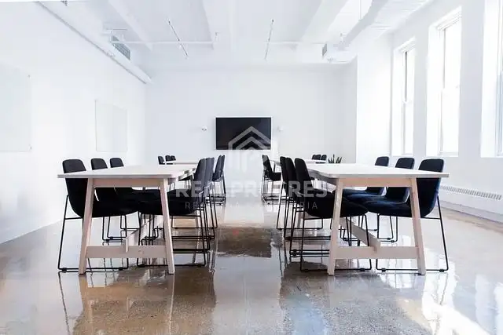

Prenájom kancelárií rôznych výmer v stráženom areáli – Nitra - ZOBOR
Nitra

- Plocha17.97 m²
- StavČiastočná rekonštrukcia
O nehnuteľnosti
Popis:Ponúkame na prenájom v Nitre, kancelárie rôznych výmer. Priestory sa nachádzajú v uzavretom areáli s výbornou dostupnosťou a sú ideálne pre firmu.Dispozícia a vybavenie:•4 samostatné kancelárie s rôznymi výmerami (možnosť vybrať si podľa potreby). Výmery : 17,97m2, 18,12m2, 19,35m2 Poschodie : 1 poschodie bez výťahu •Stav: Kancelárie sa prenajímajú nezariadené, čo umožňuje budúcemu nájomcovi prispôsobiť si priestor vlastným potrebám.•Sociálne zariadenie: K dispozícii je spoločné WC na chodbe•Spoločná kuchynkaTechnické parametre a výhody:•Vlastné merače: Každý priestor má samostatné meranie energií •Parkovanie: priamo v areáli.•areál monitorovaný kamerovým systémom •Lokalita: Nitra ,Dolnozoborská ulica s rýchlym napojením na diaľnicu alebo centrum mesta.CENA ZA PRENÁJOM : 66,60- EUR /m2 / rok+ DPH + E FOTO je ilustračné BLIŽŠIE INFORMÁCIE DOHODY A NÁVRHY VÁM RADI ZODPOVIEME NA DOHODNUTEJ OBHLIADKEBENEFITY PRE VÁS NA JEDNOM MIESTE S NAJLEPŠÍMI PODMIENKAMIINFORMÁCIE↓↓↓Realitný maklér : Margita ŠinčokováTel.kontakt : 0948 434 787Mail : sincokova@realprogres.sk- Autorizácia zmlúv zabezpečená advokátskou kanceláriou- Určenie všeobecnej hodnoty nehnuteľnosti- Zabezpečenie znaleckého posudku- Hypotéka a poistenie s hypotekárnym špecialistom s dlhoročnými skúsenosťami
Parametre
- Druh
- Kancelárie, administratívne priestory
- Dátum zverejnenia
- 13. 04. 2026
- Energetický certifikát budovy
- nie je
- Rok výstavby
- 1975
- Stav nehnuteľnosti
- Čiastočná rekonštrukcia
- Typ
- Prenájom
- Typ konštrukcie
- Tehlová
- Vybavenie
- Vonkajšie parkovacie miesto
- Úžitková plocha
- 17.97 m²